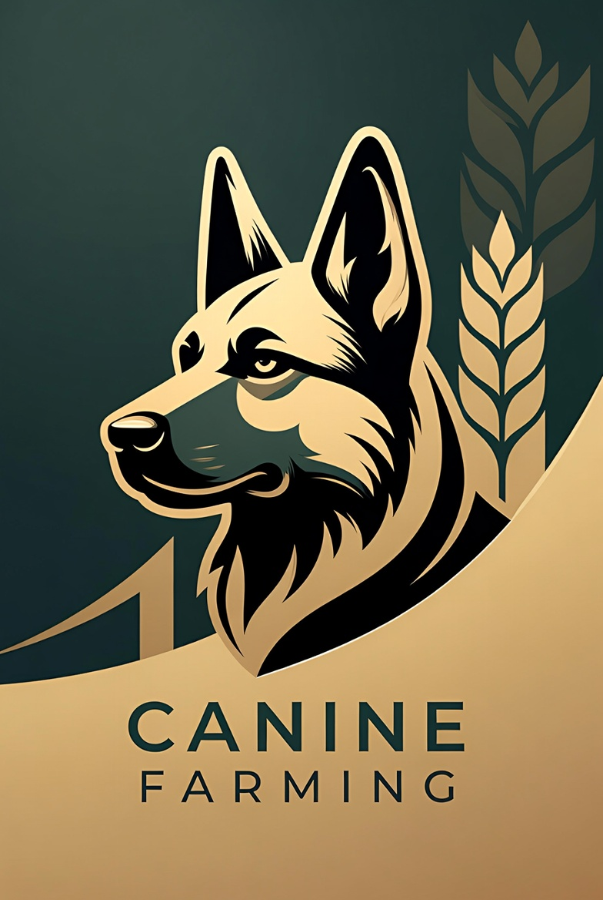

Sustainable Proof-of-Stake Simulation on Pi Network
The Canine Farming Protocol is a disciplined, community-driven Proof-of-Stake simulation built exclusively for the Pi Network ecosystem. Inspired by the sustainable and exponential growth patterns of German Shepherd populations, the protocol introduces a strictly capped utility token — $CFM — with a hard maximum supply of 10,000,000 tokens.
Through transparent tokenomics and gamified staking mechanics, the platform fosters financial literacy while rewarding long-term participation in a fair and sustainable manner.
Total Maximum Supply: 10,000,000 $CFM (Hard Cap)
The project is currently led by a single dedicated developer to ensure rapid iteration, security, and strict compliance during the Testnet phase. This structure allows for quick response to feedback from the Pi Core Team and Pioneers.
As the protocol matures and reaches defined milestones, governance will transition toward a more decentralized model, empowering verified community members to participate in key decision-making processes.
Canine Farming Protocol is a gamified simulation and educational platform. $CFM is an internal calculation metric designed for entertainment, learning, and testing purposes within the Pi Network ecosystem. It does not represent financial investment, equity, or guaranteed returns.